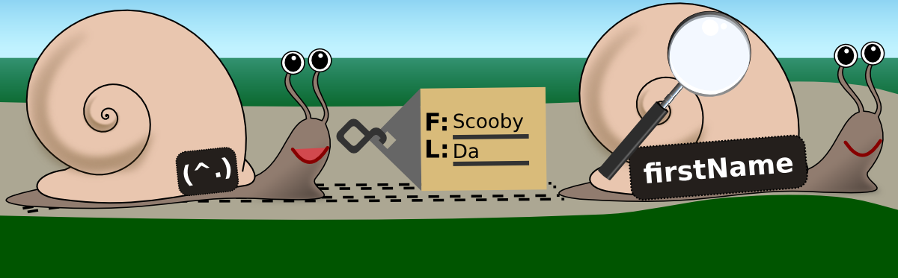
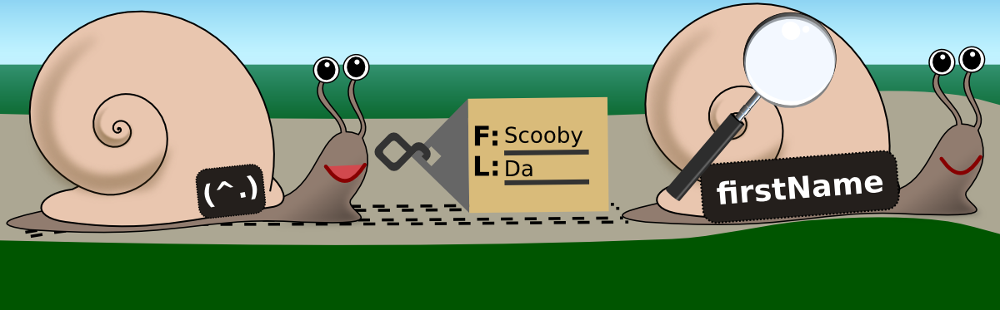

Coder Decoder
Functional Programmer Lingo Explained, with Pictures
Katie Miller (@codemiller) OpenShift Developer Advocate at Red Hat
Mission
Caveats
Setting the Scene
Haskell
list1 = [1,2,3]
list2 = [4,5,6]
list1 ++ list2
-- [1,2,3,4,5,6]
catcon list1 list2
-- [4,5,6,1,2,3]
catcon :: [Int] -> [Int] -> [Int]catcon :: Num a => [a] -> [a] -> [a]catcon :: [a] -> [a] -> [a]
catcon xs ys = ys ++ xsFriendly Funky Snail

OpenShift
Wubble Demo App
Referential Transparency
A property of an expression in a program that can be replaced with its value without changing the behaviour of the program
We can reason about program behaviour
points = succ (2 + 3)55succ (2 + 3)5
score = succ 5pointspoints * 10
main = putStrLn (show score)
$ ./main
60
staticPath :: FilePath -> IO FilePath
staticPath dir = maybe dir (++ dir) <$> lookupEnv "OPENSHIFT_REPO_DIR"Higher-Order Function
A function that takes a function as an argument or returns one as a result
Glue pieces of code together; reduce code repetition; modular design
ghci> let list1 = [1,2,3]
ghci> :type map
map :: (a -> b) -> [a] -> [b]
ghci> map (\elem -> elem * 2) list1
[2,4,6]
staticPath :: FilePath -> IO FilePath
staticPath dir = maybe dir (++ dir) <$> lookupEnv "OPENSHIFT_REPO_DIR"Currying
Evaluating multi-argument functions as a chain of functions that each take exactly one argument
Aids code reuse; can make code more readable
catcon :: [a] -> [a] -> [a]
catcon xs ys = ys ++ xs
ghci> :type catcon [1,2,3]
catcon [1,2,3] :: Num a => [a] -> [a]
ghci> :type map (catcon [1,2,3])
map (catcon [1,2,3]) :: Num a => [[a]] -> [[a]]
ghci> map (catcon [1,2,3])(\list -> catcon [1,2,3] list)(\lists -> map (\list -> catcon [1,2,3] list) lists) [[4],[5],[6]]
[[4,1,2,3],[5,1,2,3],[6,1,2,3]]staticPath :: FilePath -> IO FilePath
staticPath dir = maybe dir (++ dir) <$> lookupEnv "OPENSHIFT_REPO_DIR"
-- maybe :: b -> (a -> b) -> Maybe a -> b
-- maybe dir (++ dir) :: Maybe FilePath -> FilePathClosure
An instance of a function together with the environment in which it was created
Allows functions to access variables from their context even when it no longer exists; can make code more concise
ghci> (\ch n -> (\str -> take n (repeat ch) ++ str)) 'a' 5 "ha"
"aaaaaha"
liftIO (chooseDefs ws bubbles) >>= (\defs -> liftIO (shuffled defs) >>=
(\sdefs -> renderGame (ws^.name) defs sdefs))Functor
Type constructor value that can be mapped over
Identify common pattern; use abstraction to reduce code duplication
ghci> :info Functor
class Functor f where
fmap :: (a -> b) -> f a -> f b
...
ghci> fmap (*2) [1,2,3]
[2,4,6]
ghci> fmap reverse getLine
foo
"oof"staticPath :: FilePath -> IO FilePath
staticPath dir = maybe dir (++ dir) <$> lookupEnv "OPENSHIFT_REPO_DIR"
-- maybe dir (++ dir) :: Maybe FilePath -> FilePath
-- lookupEnv "OPENSHIFT_REPO_DIR" :: IO (Maybe String)
Monad
Structure that puts values in a computational context and implements functions that facilitate the chaining of these computations
A large number of very useful functions can be written once for any type that fits the pattern
ghci> :info Monad
class Monad m where
(>>=) :: m a -> (a -> m b) -> m b
return :: a -> m a
...
ghci> [1,2,3] >>= (\x -> return (x + 1))
[2,3,4]
ghci> let crossp xs ys = xs >>= (\x -> ys >>= (\y -> return (x * y)))
ghci> crossp [1,2,3] [2,4,6]
[2,4,6,4,8,12,6,12,18]
-- dbConnInfo :: IO ConnectInfo
-- connect :: ConnectInfo -> IO Connection
dbConn :: IO Connection
dbConn = dbConnInfo >>= connectLens
Structure for accessing and mutating values in a data type
Provides concise, functional way of drilling down into data types to get or set
-- data Lens s a = Lens { set :: s -> a -> s, view :: s -> a }
ghci> :info Lens
type Lens s t a b = Functor f => (a -> f b) -> s -> f t
...-- dog = Dog { _name = Name { _firstName = "Scooby", _lastName = "Da" } }
-- cat = Cat { _archEnemy = dog }
-- mouse = Mouse { _food = "cheddar" }
ghci> cat^.archEnemy^.name^.firstNamecat^.archEnemy^.name^.firstName
"Scooby"
ghci> set archEnemy mouse cat
Cat {_archEnemy = Mouse {_food = "cheddar"}}
 

liftIO (chooseDefs ws bubbles) >>= (\defs -> liftIO (shuffled defs) >>=
(\sdefs -> renderGame (ws^.name) defs sdefs))Conclusion
References, Resources, and Credits
References and Resources
- Abrahamson, J., A Little Lens Starter Tutorial
- Functional Talks
- Gonzalez, G., The Functor Design Pattern
- Haskell Learning Path
- Haskell Wiki on Functional Programming
- Hughes, J., Why Functional Programming Matters
- Jones, M. P., Functional Programming with Overloading and Higher-Order Polymorphism
- Kmett, E., Lenses, Folds, and Traversals
- Kmett, E., The Lens Package
- Lipovača, M., Learn You a Haskell For Great Good
- Meijer, E., Functional Programming Fundamentals Series
- Miller, K., Monads to the Rescue
- Morris, T., A Modern History of Lenses
- Morris, T. & Hibberd, M., NICTA Functional Programming Course
- O'Sullivan, B., Stewart, D., & Goerzen, J., Real World Haskell
- Wubble Source Code
- Yorgey, B., Introduction to Haskell
- Yorgey, B., Typeclassopedia
Image Credits
Coder Decoder
http://decoder.codemiller.com
Katie Miller (@codemiller) OpenShift Developer Advocate at Red Hat